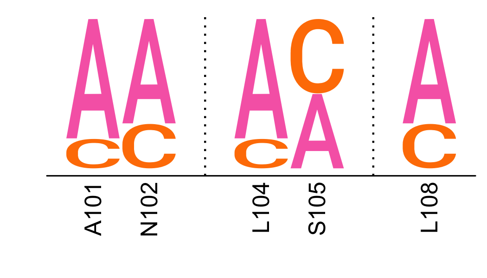

rplot¶
Plotting that uses R.
The dms_tools2 software is written in Python, but there are
useful plotting features that are only available in R,
such ggseqlogo.
This module uses R to make plots using these features. It
requires rpy2 to be installed.
Installation of rpy2 is
not automatic when you install dms_tools2 unless
you have R and rpy2
installed, or install dms_tools2 using:
pip install dms_tools[rplot] --user
-
dms_tools2.rplot.AA_COLORS_FG= {'*': '#000000', 'A': '#f76ab4', 'C': '#ff7f00', 'D': '#e41a1c', 'E': '#e41a1c', 'F': '#84380b', 'G': '#f76ab4', 'H': '#3c58e5', 'I': '#12ab0d', 'K': '#3c58e5', 'L': '#12ab0d', 'M': '#12ab0d', 'N': '#972aa8', 'P': '#12ab0d', 'Q': '#972aa8', 'R': '#3c58e5', 'S': '#ff7f00', 'T': '#ff7f00', 'V': '#12ab0d', 'W': '#84380b', 'Y': '#84380b'}¶ default colors for amino acid chars, by functional group
-
dms_tools2.rplot.SHOW_WARNINGS= 'ignore'¶ Show warnings when running
Rcode? Plausible values: default, ignore, and always. The R code gives many warnings, so ignore is good when not developing new code.
-
dms_tools2.rplot.facetedGGSeqLogo(logodata, chars, plotfile, width, height, ncol=None, char_colors={'*': '#000000', 'A': '#f76ab4', 'C': '#ff7f00', 'D': '#e41a1c', 'E': '#e41a1c', 'F': '#84380b', 'G': '#f76ab4', 'H': '#3c58e5', 'I': '#12ab0d', 'K': '#3c58e5', 'L': '#12ab0d', 'M': '#12ab0d', 'N': '#972aa8', 'P': '#12ab0d', 'Q': '#972aa8', 'R': '#3c58e5', 'S': '#ff7f00', 'T': '#ff7f00', 'V': '#12ab0d', 'W': '#84380b', 'Y': '#84380b'}, xlabelsrotate=True)[source]¶ Creates faceted logo plot.
Designed to show several measurements on the same site site-by-side, potentially for many sites. Each site must have the same set of measurements.
Makes panel of logo plots faceted on logodata[‘facetlabel’], where character stacks are labeled by logodata[‘stacklabel’] and show the characters at the indicated heights.
- Args:
- logodata (pandas DataFrame)
- Contains data to plot. Should have the columns facetlabel, stacklabel, and a column giving the height of each character in chars.
- chars (list)
- Letters for which we plot heights.
- plotfile (str)
- Name of created plot.
- width (float)
- Width of plot in inches.
- height (float)
- Height of plot in inches.
- ncol (int or None)
- Number of columns in faceted plot. If None, use as many as needed to plot everything in one row.
- char_colors (dict)
- Values give color for every character in chars.
- xlabelsrotate (bool)
- Do we rotate the x-labels?
Here is an example that creates two facets each with two stacks for the characters A and C:
>>> logodata = pandas.read_csv(io.StringIO( ... '''facetlabel stacklabel A C ... site-1 BF520 0.8 0.2 ... site-1 BG505 0.9 0.1 ... site-2 BF520 0.4 0.6 ... site-2 BG505 0.5 0.5'''), ... delim_whitespace=True, index_col=False) >>> plotfile = '_facetedGGSeqLogo_test_plot.png' >>> facetedGGSeqLogo(logodata, ... chars=['A', 'C'], ... plotfile=plotfile, ... width=3, height=2.5 ... ) >>> os.path.isfile(plotfile) True
Here is the plot created by the code block above:

-
dms_tools2.rplot.siteSubsetGGSeqLogo(logodata, chars, plotfile, width, height, yname='', char_colors={'*': '#000000', 'A': '#f76ab4', 'C': '#ff7f00', 'D': '#e41a1c', 'E': '#e41a1c', 'F': '#84380b', 'G': '#f76ab4', 'H': '#3c58e5', 'I': '#12ab0d', 'K': '#3c58e5', 'L': '#12ab0d', 'M': '#12ab0d', 'N': '#972aa8', 'P': '#12ab0d', 'Q': '#972aa8', 'R': '#3c58e5', 'S': '#ff7f00', 'T': '#ff7f00', 'V': '#12ab0d', 'W': '#84380b', 'Y': '#84380b'}, ylimits=None)[source]¶ Creates one-row logo plot with subset of sites.
Designed to show logo plot for a subset of sites. This is useful when you have data for many sites, but only want to look at a few of them.
- Args:
- logodata (pandas DataFrame)
- Contains data to plot. Should have the columns site, show, and a column giving the height height of each char in chars. Only sites where show is True are shown. Sites are shown in the order they occur in this dataframe, with spaces every time there is an interspersed site with show being False.
- chars (list)
- Letters for which we plot heights.
- plotfile (str)
- Name of created plot.
- width (float)
- Width of plot in inches.
- height (float)
- Height of plot in inches.
- yname (str)
- If set to a non-empty string, is the y-axis label and yticks are drawn.
- char_colors (dict)
- Values give color for every character in chars.
- ylimits (None or 2-tuple)
- If not None, should give the ylimits for the plot as (ymin, ymax)
Here is an example that creates a plot for a subset of sites for two characters:
>>> logodata = pandas.read_csv(io.StringIO( ... '''site show A C ... A101 True 0.8 0.2 ... N102 True 0.7 0.3 ... K103 False 0.1 0.9 ... L104 True 0.8 0.2 ... S105 True 0.5 0.5 ... T106 False 0.2 0.8 ... G107 False 0.4 0.6 ... L108 True 0.7 0.3'''), ... delim_whitespace=True, index_col=False) >>> plotfile = '_siteSubsetGGSeqLogo_test_plot.png' >>> siteSubsetGGSeqLogo(logodata, ... chars=['A', 'C'], ... plotfile=plotfile, ... width=3.5, height=2 ... ) >>> os.path.isfile(plotfile) True
Here is the plot created by the code block above:



{kind=link}